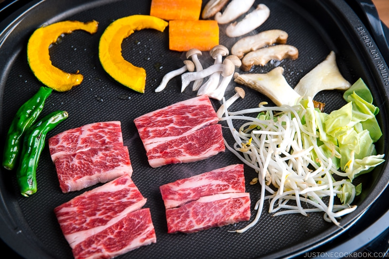

Teppanyaki

Description
As a nation obsessed with grilled food, the Japanese takes delight in grilling indoor
by making Teppanyaki at home. It's our Sunday grill, a pastime we enjoy over the
weekend and year-round.
On the hot griddle, there is thinly sliced meat, succulent seafood, freshly chopped
cabbage, generous piles of crunchy bean sprouts, seasonal vegetables, and assortments
of mushrooms sizzling away. Family comes together around the small grill, cooking,
eating, drinking, and having a good time.
No backyard? Rainy outside? No problem! Let me shwo you how to make delicious
Japanese Teppanyaki at home that will surely satisfy you.
Ingredients
- 4 oz cabbage (4 small cabbage leaves)
- 3 oz carrot (2" or 5 cm)
- 4 oz kabocha (1/8 of whole kabocha with seeds)
- 3.5 oz bean sprouts
- 2 oz shimeji mushrooms (1/2 of shimeji package)
- 1 king oyster mushroom (2 oz, 57 g)
- 2 shiitake mushrooms (2 oz, 57 g)
- 1 tablespoon neutral-flavored oil (vegetable, rice bran, canola, etc.)
- kosher or sea salt
- black pepper (freshly ground)
- 12 oz boneless beef short ribs (Each piece is sliced to 1/8 inch thickness.
We estimate 6 oz or 170 grams per person is a good amount. You can grill chicken, pork, or
seafood of your choice. For vegans, use tofu or other vegetables)
Instructions
- Gather all the ingredients. Serve the meat on a serving platter and keep in the
refrigerator until you're ready to cook.
- Remove the tough core of the cabbage leaves, and cut them into 1-inch squares.
- Peel the carrot and slice into 1/8 inch thick slabs.
- Remove the seeds from the kabocha and cut it into 1/8 inch slices.
- Poke a few holes into the shishito peppers to avoid popping. Cut off and discard
the ends of the shimeji mushrooms and separate them.
- Remove the stem of shiitake mushrooms and slice the caps into thin 1/8 inch thick
slices.
- Cut the king oyster mushroom in half lengthwise and then slice into thin slabs.
- Put all the vegetables and mushrooms on another serving platter. Bring the meat and
vegetable platters to the table where you set up a portable electric griddle.
- Preheat the electric griddle to 375 ºF (190 ºC) and grease the cooking surface with
oil. If the meat is well-marbled, you do not need to grease the area where you cook
the meat. Put vegetables and meat. We usually divide the griddle space into different
sections, such as the meat section, vegetable section, or mushroom section, etc.
Season the vegetables and mushrooms with salt and pepper and keep the meat unseasoned.
- Each person should have a medium plate and a small bowl of Teppanyaki Sauce. When
the food is cooked through, dip in the homemade Teppanyaki Sauce and enjoy!